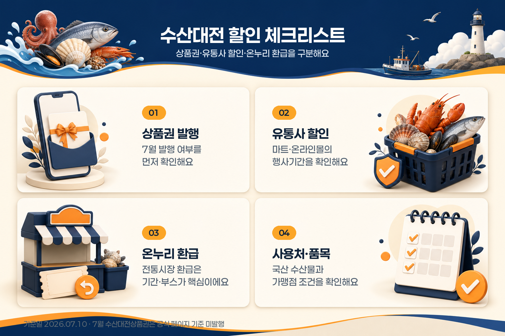
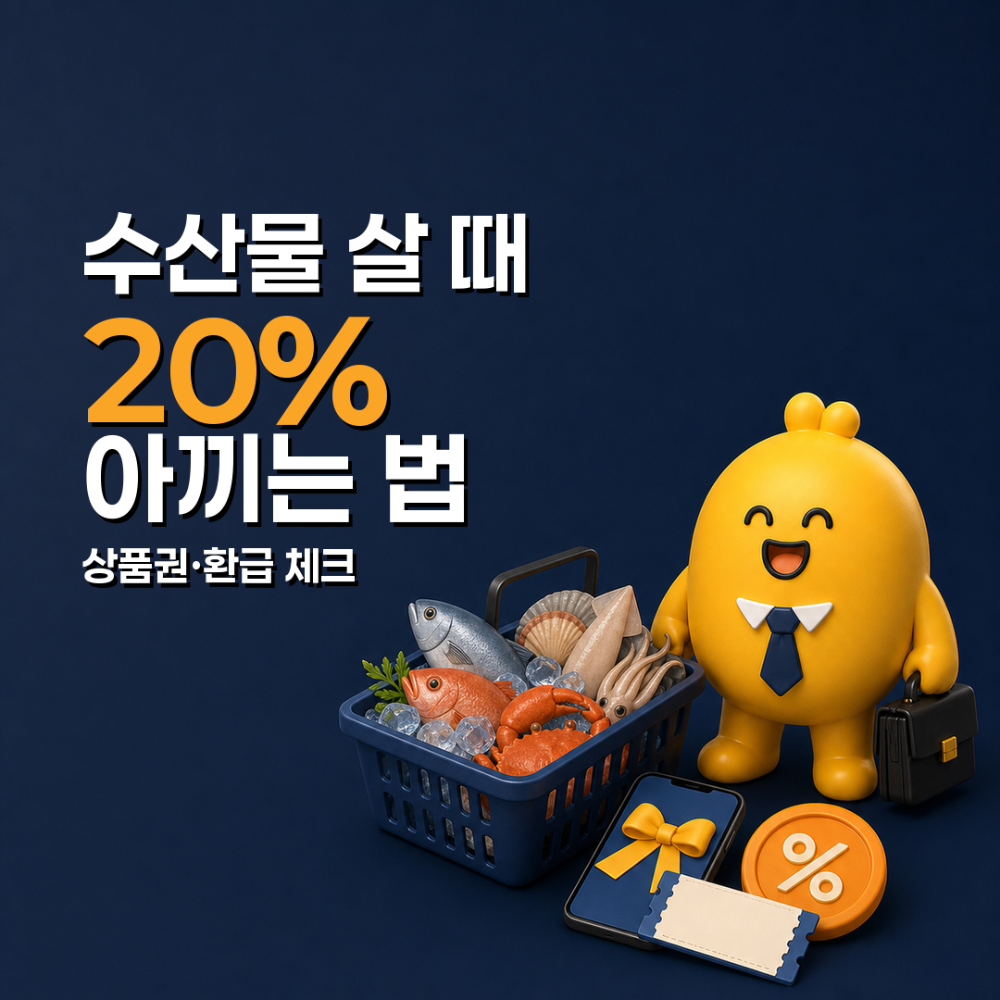

수산물 살 때 20% 아끼는 법: 대한민국 수산대전 상품권 확인 포인트
대한민국 수산대전은 국산 수산물을 조금 더 저렴하게 살 수 있도록 운영되는 할인 행사입니다. 다만 처음 확인할 때 가장 헷갈리는 부분이 있습니다. “수산대전 상품권”, “마트·온라인몰 할인”, “전통시장 온누리상품권 환급”이 서로 같은 혜택처럼 보이지만 실제로는 확인 경로와 기간이 다릅니다.
2026년 7월 10일 기준으로 먼저 알아둘 점은 분명합니다. 대한민국 수산대전 공식 제로페이 페이지에는 7월 대한민국 수산대전상품권은 발행되지 않는다고 안내되어 있습니다. 또 해양수산부가 안내한 6월 수산물 특별 할인전은 2026년 7월 5일까지였고, 공식 행사안내 기준 다음 유통사 특별전은 2026년 7월 29일부터 8월 23일까지로 예정되어 있습니다.
그러니 지금 이 글의 핵심은 “당장 상품권을 사세요”가 아니라, 수산물 20% 할인 혜택을 놓치지 않기 위해 어떤 화면을 먼저 확인해야 하는지입니다.
기준일: 2026년 7월 10일
먼저 결론부터 정리하면
| 확인할 것 | 2026년 7월 10일 기준 핵심 |
|---|---|
| 수산대전상품권 | 공식 제로페이 페이지 기준 7월 발행 없음 |
| 마트·온라인몰 할인 | 6월 특별전은 6월 17일~7월 5일 진행, 다음 유통사 특별전은 7월 29일~8월 23일 예정 |
| 전통시장 온누리 환급 | 6월 환급행사는 6월 10일~14일 종료, 추석 환급행사는 9월 16일~20일 예정 |
| 20% 혜택 | 상품권 발행이 열릴 때 선할인 구조로 확인, 발행월·한도·사용처 확인 필요 |
| 최대 2만원 환급 | 온누리 환급행사는 구매금액 구간과 환급 부스 운영 여부를 확인해야 함 |
| 최종 확인 경로 | 대한민국 수산대전 공식 누리집, 제로페이 페이지, 참여 점포·행사 페이지 |

이 글은 수산대전 상품권을 추천하거나 특정 판매처 구매를 권하는 글이 아닙니다. 수산물 장보기 전에 상품권, 할인전, 환급행사를 구분해 헷갈리지 않도록 정리한 체크리스트입니다.
1. 대한민국 수산대전은 어떤 행사인가요?
대한민국 수산대전 공식 행사안내는 이 행사를 해양수산부와 주요 온·오프라인, 전통시장이 함께하는 국산 수산물 상생할인 행사로 설명합니다. 행사에는 대형마트, 중소형 마트, 온라인 쇼핑몰, 전통시장 등이 참여합니다.
2026년 공식 행사안내에는 유통사 특별전 일정도 정리되어 있습니다.
| 구분 | 공식 행사안내 기준 일정 |
|---|---|
| 설 특별전 | 1월 29일~2월 22일 |
| 4월 수산인의 날 특별전 | 3월 25일~4월 12일 |
| 5월 특별전 | 5월 6일~6월 3일 |
| 6월 특별전 | 6월 17일~7월 5일 |
| 8월 특별전 | 7월 29일~8월 23일 |
| 추석 특별전 | 9월 9일~10월 4일 |
| 코리아수산페스타 | 11월 4일~11월 22일 |
중요한 것은 행사명이 같아도 매번 기간과 참여 업체, 할인 품목이 달라질 수 있다는 점입니다. 공식 행사안내에도 세부 일정은 변경될 수 있다고 되어 있으므로, 장보기 직전에는 진행 중인 기획전 페이지를 다시 확인하는 것이 좋습니다.
2. 수산대전상품권과 유통사 할인은 다릅니다
검색하다 보면 “수산대전 20% 할인”이라는 표현을 자주 보게 됩니다. 여기서 말하는 20%는 주로 수산대전상품권처럼 모바일 상품권을 할인 구매하는 구조와 연결됩니다. 반면 마트·온라인몰에서 진행되는 수산물 특별 할인전은 판매처별 쿠폰, 자체 할인, 정부 지원 할인 등이 합쳐져 체감 할인율이 달라질 수 있습니다.
두 방식을 나누면 이렇습니다.
| 구분 | 어떻게 할인되나요? | 먼저 볼 것 |
|---|---|---|
| 수산대전상품권 | 발행 기간에 모바일 상품권을 할인 구매한 뒤 가맹점에서 사용 | 발행월, 발행시간, 구매한도, 사용처 |
| 유통사 특별전 | 마트·온라인몰 행사 상품에 쿠폰·할인이 적용 | 행사기간, 판매처, 품목, 쿠폰 조건 |
| 온누리상품권 환급 | 전통시장에서 국산 수산물 구매 후 환급 부스에서 상품권 환급 | 행사시장, 구매금액 구간, 환급 부스, 신분확인 |
즉 “수산대전”이라는 이름만 보고 하나의 혜택으로 이해하면 안 됩니다. 내가 전통시장에 갈 것인지, 온라인몰에서 주문할 것인지, 모바일 상품권을 미리 살 것인지에 따라 확인 화면이 달라집니다.
3. 7월에는 수산대전상품권 발행 여부부터 확인하세요
2026년 7월 10일 기준으로 대한민국 수산대전 제로페이 페이지에는 “7월 대한민국 수산대전상품권은 발행되지 않으니 이용에 참고 부탁드립니다”라는 안내가 표시되어 있습니다.
이 한 줄이 중요합니다. 상품권형 20% 혜택은 발행이 열려야 구매할 수 있습니다. 이미 발행된 상품권을 보유하고 있는지, 사용 기한이 남아 있는지, 가맹점에서 결제 가능한지는 별도 확인이 필요하지만, 7월 신규 발행을 기다리는 독자라면 먼저 공식 제로페이 페이지를 봐야 합니다.
수산대전상품권을 볼 때는 아래 항목을 체크하세요.
| 체크 항목 | 왜 중요한가요? |
|---|---|
| 발행월 | 발행이 없는 달에는 신규 구매가 어렵습니다. |
| 발행시간 | 상품권은 선착순 발행일 수 있어 시간 확인이 중요합니다. |
| 구매한도 | 월 한도 또는 회차별 한도가 있을 수 있습니다. |
| 사용처 | 전통시장 내 제로페이 가맹 수산매장 등 조건을 확인해야 합니다. |
| 구매 가능 품목 | 국산 수산물 등 제한 조건이 있을 수 있습니다. |
| 유효기간·환불 | 구매 후 사용기한과 환불 조건을 확인해야 합니다. |
따라서 이 글의 제목처럼 20%를 아끼는 방법을 찾고 있다면 첫 단계는 상품권 앱을 여는 것이 아니라, 공식 페이지에서 “이번 달 발행이 있는지”를 확인하는 것입니다.
4. 마트·온라인몰 할인은 행사기간과 품목을 봐야 합니다
해양수산부 2026년 6월 9일 보도자료는 6월 수산물 특별 할인전이 6월 17일부터 7월 5일까지 19일 동안 전국 56개 판매처에서 진행된다고 안내했습니다. 소비자는 최대 50% 할인된 가격으로 수산물을 구매할 수 있다고 설명했고, 대중성 어종과 김, 전복, 장어 등도 할인 대상에 포함된다고 안내했습니다.
다만 이 보도자료 기준 6월 특별전은 이미 2026년 7월 5일에 끝났습니다. 그래서 2026년 7월 10일 현재 글을 보는 독자라면, 바로 6월 할인전 쿠폰을 찾기보다 다음 일정을 확인해야 합니다. 공식 행사안내 기준 다음 유통사 특별전은 7월 29일 시작 예정입니다.
마트·온라인몰 할인은 아래 순서로 확인하는 것이 좋습니다.
- 대한민국 수산대전 공식 누리집의 진행 중인 기획전 페이지를 봅니다.
- 내가 이용할 판매처가 행사에 참여하는지 확인합니다.
- 할인 품목이 내가 사려는 수산물인지 확인합니다.
- 쿠폰이 선착순인지, 회원 전용인지, 장바구니 쿠폰인지 봅니다.
- 판매처 자체 할인과 정부 지원 할인이 중복 적용되는지 결제 전 금액을 확인합니다.
할인율만 보고 들어가면 품목이 다르거나 쿠폰이 소진되어 체감 혜택이 줄어들 수 있습니다. 장보기 전에는 “내 판매처, 내 품목, 내 결제금액” 기준으로 보는 것이 가장 안전합니다.
5. 전통시장 온누리상품권 환급은 부스와 금액 구간이 핵심입니다
전통시장 할인은 상품권을 미리 할인 구매하는 방식과 다릅니다. 해양수산부 2026년 6월 9일 보도자료에 따르면, 6월 10일부터 14일까지 전통시장 252개소에서 수산물 온누리상품권 환급행사가 진행되었습니다. 행사 참여 시장에서 국산 수산물을 구매한 뒤 영수증과 휴대전화 또는 신분증을 지참해 시장 내 환급 부스에 방문하면 구매 금액에 따라 온누리상품권을 환급받는 구조입니다.
당시 환급 구간은 다음과 같이 안내되었습니다.
| 구매금액 | 환급액 |
|---|---|
| 3만 4천 원 이상~6만 7천 원 미만 | 1만 원 환급 |
| 6만 7천 원 이상 | 2만 원 환급 |
이 구조는 직관적이지만 놓치기 쉬운 조건이 있습니다. 같은 전통시장이라도 행사 참여 시장인지, 부스 운영 시간이 맞는지, 구매 품목이 국산 수산물인지, 영수증 인정 방식이 맞는지 확인해야 합니다.
2026년 공식 행사안내 기준 전통시장 온누리상품권 환급행사는 설, 6월, 추석 일정으로 나뉘며, 다음 큰 일정은 추석 환급행사인 9월 16일부터 9월 20일까지로 표시되어 있습니다. 세부 행사 일정은 변경될 수 있으므로, 실제 방문 전에는 공식 온누리상품권 환급행사 페이지에서 참여 시장과 운영 정보를 확인해야 합니다.
6. 장보기 전 확인 순서
수산대전 혜택을 헷갈리지 않으려면 할인 이름보다 내가 어디서 살지 먼저 정하면 됩니다.
| 내가 살 곳 | 먼저 확인할 혜택 | 확인 포인트 |
|---|---|---|
| 전통시장 | 수산대전상품권 또는 온누리 환급 | 상품권 발행 여부, 가맹점, 환급 부스, 구매금액 구간 |
| 대형마트·중소형마트 | 유통사 특별전 | 행사기간, 쿠폰 발급, 행사 품목, 결제 전 할인 적용 여부 |
| 온라인몰 | 온라인 기획전 | 쿠폰 선착순, 품목, 배송비, 행사 종료일 |
| 이미 상품권을 보유한 경우 | 사용처 확인 | 가맹 수산매장, 유효기간, 국산 수산물 조건 |
한마디로 정리하면, 상품권은 발행 여부, 유통사 할인은 행사기간, 온누리 환급은 환급 부스를 먼저 확인하면 됩니다.
7. 자주 묻는 질문
지금 7월에 수산대전상품권을 살 수 있나요?
2026년 7월 10일 기준 대한민국 수산대전 공식 제로페이 페이지에는 7월 대한민국 수산대전상품권은 발행되지 않는다고 안내되어 있습니다. 신규 구매 가능 여부는 월별 발행 안내가 바뀔 수 있으므로 공식 페이지를 다시 확인해야 합니다.
수산대전상품권은 무조건 20% 할인인가요?
수산대전상품권은 20% 선할인으로 안내되는 경우가 많지만, 발행월, 구매한도, 예산, 사용처 조건이 함께 붙습니다. “20%”만 보고 판단하지 말고 이번 달 발행 여부와 구매한도, 가맹점을 같이 확인해야 합니다.
마트·온라인몰 수산대전은 지금도 진행 중인가요?
해양수산부가 안내한 6월 수산물 특별 할인전은 2026년 6월 17일부터 7월 5일까지였습니다. 2026년 7월 10일 현재 기준으로는 종료된 일정입니다. 공식 행사안내에는 8월 특별전이 7월 29일부터 8월 23일까지로 예정되어 있습니다.
온누리상품권 환급은 상품권을 미리 사는 건가요?
아닙니다. 온누리 환급행사는 참여 전통시장에서 국산 수산물을 구매한 뒤 영수증과 휴대전화 또는 신분증을 가지고 환급 부스를 방문해 구매금액 구간에 따라 상품권을 돌려받는 방식입니다.
수입 수산물도 가능한가요?
공식 보도자료와 행사 안내는 국산 수산물, 대중성 어종, 주요 할인 품목을 중심으로 설명합니다. 실제 가능 품목은 행사별로 다를 수 있으므로 판매처 행사 페이지와 가맹점 안내를 확인해야 합니다.
어디서 최종 확인하면 되나요?
대한민국 수산대전 공식 누리집에서 행사안내, 진행 중인 기획전, 온누리상품권 환급행사, 제로페이 페이지를 확인하는 것이 가장 안전합니다. 해양수산부 보도자료는 큰 일정과 행사 구조를 확인하는 데 도움이 됩니다.
마무리 정리
대한민국 수산대전은 수산물 장보기 부담을 줄이는 데 도움이 되는 행사입니다. 하지만 혜택 이름이 비슷해서 처음 보면 헷갈릴 수 있습니다. 수산대전상품권은 발행 여부와 사용처를 봐야 하고, 마트·온라인몰 할인은 행사기간과 품목을 봐야 하며, 온누리상품권 환급은 참여시장과 환급 부스를 확인해야 합니다.
2026년 7월 10일 기준으로는 7월 수산대전상품권 신규 발행이 없고, 6월 유통사 특별전도 7월 5일 종료되었습니다. 다음 혜택을 기다린다면 공식 행사안내의 7월 29일~8월 23일 8월 특별전과 9월 16일~20일 추석 온누리 환급행사를 우선 체크해 보세요.
자료 기준일: 2026년 7월 10일 출처: 2026 대한민국 수산대전 공식 누리집, 진행중인 기획전, 제로페이 페이지, 온누리상품권 환급행사 페이지, 해양수산부 2026년 6월 9일 보도자료, 해양수산부 설맞이 수산물 할인 보도자료 안내: 이 글은 공개 공식 자료를 바탕으로 한 일반 정보 정리입니다. 실제 상품권 발행 여부, 구매한도, 할인율, 참여 판매처, 환급시장, 운영시간, 대상 품목은 구매·방문 시점의 대한민국 수산대전 공식 누리집과 판매처 안내를 기준으로 확인해야 합니다.
